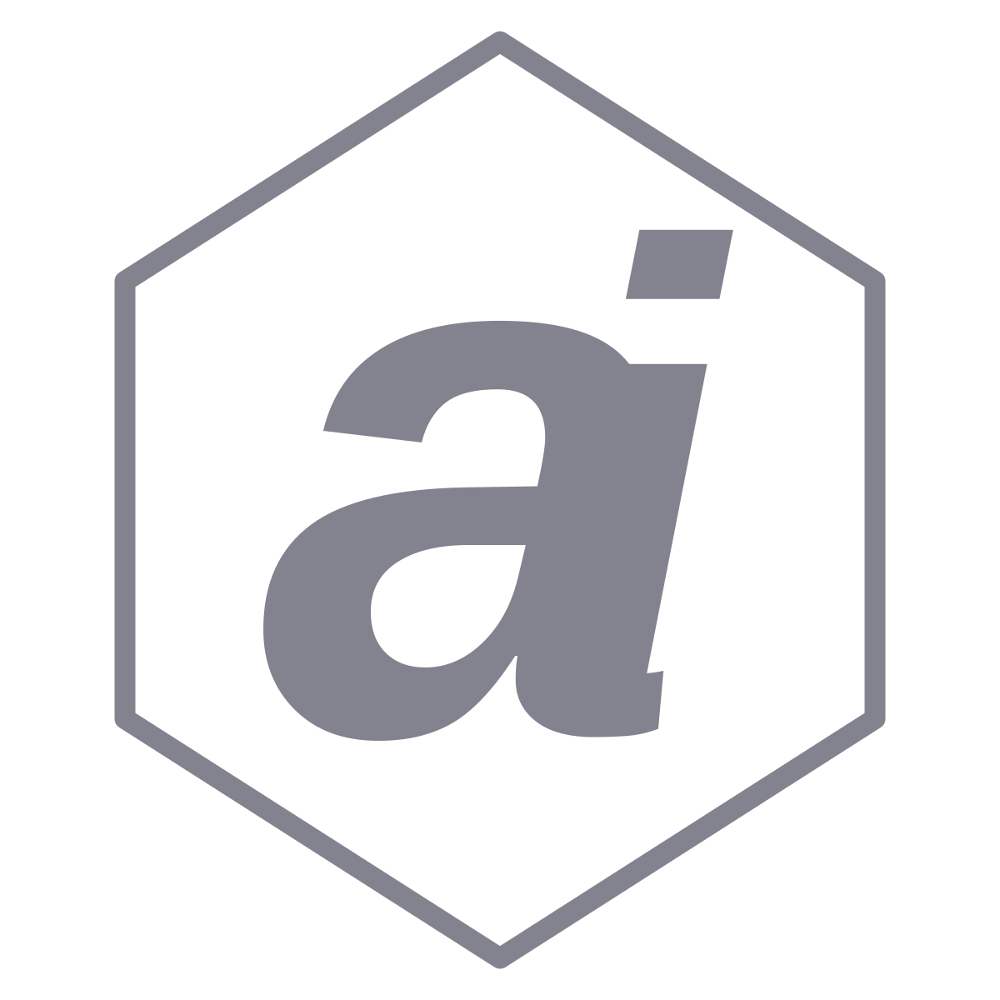

dataimago: Ethical AI-Native Data Science
Reconciling meaning (hermeneutics) and measurement (positivism)

dataimago: Ethical AI-Native Data Science
Reconciling meaning (hermeneutics) and measurement (positivism)
dataimago is an AI-native company founded to realize a deeply ethical, future-oriented vision for how artificial intelligence can support human flourishing.
The most transformative AI organization of the 21st century
Our North Star
🌟 Vision
To become the most transformative AI organization of the 21st century, aligning super-intelligence with human emancipation, and using flow-based performance management to reshape how societies learn, heal, grow, and govern.
🎯 Mission
To develop AI systems and analytic tools that reconcile meaning (hermeneutics) and measurement (positivism) in ways that reduce human suffering and enable agency at all levels of society—from individuals to high level policy makers.
Multi-Layered Foundation
A sophisticated R-first design system with ethical AI principles
🏗️ R Package Core
- Foundation Documents: Philosophical frameworks & critical theory
- Documentation Utils: Ethical AI annotations
- Design System: R-first CSS compilation
🎨 Design System
- Design Tokens: JSON → CSS custom properties
- SCSS Compilation: Style Dictionary + Sass
- Multi-Channel Distribution: Quarto + CDN + Next.js
🌐 Distribution
- Quarto Extension:
dataimago/ai-native - CDN Assets: jsDelivr-ready via
inst/quarto-assets/ - Next.js Integration: Tailwind preset generation
Key Features
Tools for emancipatory AI development
📚 Foundation Documents
Built on Frankfurt School critical theory and modern alignment discourse
🛠 Documentation Generation
Convert R package documentation to Quarto websites with philosophical context
🎨 R-First Design System
Complete CSS build system wrapping Node.js tools in R functions
🏗 Application Templates
Scaffolding for NextJS + R integration, emancipatory frameworks
Professional Visual Identity
SVG-based design system with theme integration
🎨 Scalable Design
- SVG logos: Perfect quality at any size (920-1129 bytes)
- Theme integration: Automatic light/dark mode adaptation
- Hover effects: Professional 0.3s transitions
- 4 variants per logo: Grey/dark states + hover states
🌐 CDN Distribution
- Global availability: jsDelivr CDN for external projects
- Template system: Consistent branding across packages
- Professional quality: CSS mask-based typography

Technical Excellence
R-first development with modern web tooling
🔄 Build Pipeline
Design Tokens (JSON) → Style Dictionary → CSS Properties
SCSS Source → Sass Compiler → Compiled CSS
PostCSS → Minification → 7 Distribution Channels📦 Distribution Strategy
- R Package:
system.file()access to assets - Quarto Extension:
_extensions/dataimago/ai-native/
- CDN Assets:
https://cdn.jsdelivr.net/gh/dataimago/... - Next.js Preset:
tailwind-preset.jsgeneration
⚡ Performance Features
- 2.6s build time: Comprehensive asset generation
- SRI hashes: Security for CDN distribution
- Source maps: Development debugging support
- Atomic operations:
fs::file_copy()with overwrite protection
🛡️ Quality Assurance
- Multi-platform testing: R CMD check across OSes
- Automated releases: jsDelivr via git tags
- Dependency monitoring: Security scanning
Getting Started
# Install the package (when available)
# devtools::install_github("dataimago/dataimago")
# Load the package
library(dataimago)
# Generate documentation for your package
create_quarto_documentation()
# Build design system
build_design_system()Philosophy as Code
dataimago represents a fundamental inversion: instead of embedding culture in AI, we embed AI in culture for emancipatory ends. This approach transforms AI from an instrument of domination into a force for human flourishing.
Code-as-Philosophy Commitments
- Hermeneutic Transparency: All modeling assumptions documented and interpretable
- Positivistic Rigor: Empirical operations robust, efficient, and replicable
- Ethical Reflexivity: Tools include affordances for users to interrogate usage
- Iterative Design: Each commit is dialectical step toward future aspirations
Learn More
API Reference
Complete function documentation
Mission & Vision
Philosophy
Critical Theory Manifesto Theoretical foundation